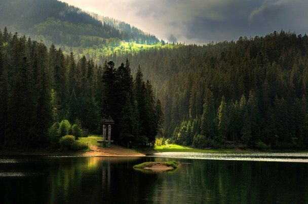

Моя
Україна
Унікальні місця України створила природа із води, піску, гір, дерев та кам'яних брил.
В Україні є свої унікальні місця, які вражають масштабами і красою. Вони оповиті легендами і таємницями, які історики досі намагаються розгадати. Тут можна відновити сили, зробити гарні фото напам'ять та знову закохатися.
Тому представляю список із 5 унікальних місць України, які створила сама природа.
Олешківська пустеля
200 гектарів гарячого піщаного моря, яке приховує на своєму дні багато таємниць знаходиться у Цюрупінському районі за 30 кілометрів на Схід від Херсона.
З'явилася пустеля через випасання величезних отар овець тут у ХІХ столітті. Вівці знищили усю траву в районі, залишивши лише піски, які розширила вітрова ерозія.
Сьогодні, Олешківська пустеля вважається найбільшим піщаним масивом Європи, який складається із семи так званих арен. Усі вони горбисті, із коливанням висот до 20 метрів.
З 2010 року ця територія є Національним природним парком і огороджена з усіх боків штучними лісами.
Дністровський каньйон
Утворений цей каньйон у результаті вимивання Дністром гірської породи Подільської височини річкою Дністер і розташований на межі Івано-Франківської, Тернопільської, Чернівецької та Хмельницької областей.
Це найбільший в Україні та один із найбільших в Європі каньонів. Він являє собою долину, чиї стрімкі береги досягають від 100 до 250 метрів над водою.
Крім того, на території Дністровського каньйону знаходиться близько 100 пам'яток живої та неживої природи світового значення. Тут збереглися і унікальні еталони відслонень гірських порід.
Також, на території Дністровського району знаходиться 26 населених пунктів, де була досліджена трипільська культура.
Оптимістична печера
Це найдовша у світі гіпсова печера. Розташована вона поблизу села Королівка на Тернопільщині.
Утворилася оптимістична печера внаслідок розчинення підземними водами гіпсів неогенового віку чотирнадцять мільйонів років тому.
Найбільшим скарбом печери вважаються вторинні мінеральні утворення, які протягом десятків тисяч років росли тут у підземних порожнинах. Це, насамперед гіпсові кристали різноманітної форми та кольору.
Цікаво, що температура повітря в Оптимістичній печері протягом року постійна і коливається від 9,5 – 10,5 градусів і не залежить від температури повітря на поверхні. Печера вражає своєю красою та унікальністю і приваблює з кожним роком все більше туристів.
Озеро Світязь
Найбільше та найглибше озеро природного походження в Україні знаходиться недалеко від селища Шацьк на Волині.
Воно вважається найбільшим озером у групі Шацьких озер. Живиться воно підземними водами та артезіанськими джерелами.
Крім того, вода у ньому настільки прозора, що у сонячну погоду можна побачити кількаметрове дно озера.
Серед особливостей озера, слід виділити його дивовижні властивості. Вода озера має цілющі властивості, адже у своєму складі вона має срібло, йод і гліцерин.
Озеро Синевир
Озеро вважається найкоштовнішим природним скарбом Національного природного парку "Синевир" і є однією з візитних карток Українських Карпат.
За однією з легенд, це озеро утворилося від потоку сліз графської доньки Синь, на місці, де її коханого, простого верховинського пастуха Вира, було вбито камінною глибою за наказом підступного графа.
Легенда гарна, але є й справжні свідчення того, що насправді воно утворилося близько 10 тисяч років тому унаслідок потужного зсуву від землетрусу.
У наш час озеро приваблює сюди багато закоханих для святкування весілля на берегах озера. Причина цьому – народне повір'я про те, що якщо люди познайомилися поруч з озером, на них чекає велика і міцна любов.